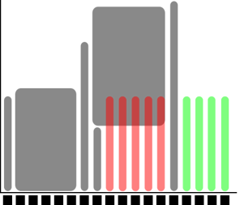

Submitting jobs
Objectives
This is a short introduction in how to reach the calculation nodes
Wednesday afternoon is wedded to this topic!
Slurm, sbatch, the job queue
Problem: 1000 users, 500 nodes, 10k cores
Need a queue:

x-axis: cores, one thread per core
y-axis: time
Slurm is a jobs scheduler
Plan your job and but in the slurm job batch (sbatch)
sbatch <flags> <program>orsbatch <job script>Easiest to schedule single-threaded, short jobs


Left: 4 one-core jobs can run immediately (or a 4-core wide job).
The jobs are too long to fit in core number 9-13.
Right: A 5-core job has to wait.
Too long to fit in cores 9-13 and too wide to fit in the last cores.
Jobs
Job = what happens during booked time
Described in a Bash script file
Slurm parameters (flags)
Load software modules
(Move around file system)
Run programs
(Collect output)
… and more
Slurm parameters
1 mandatory setting for jobs:
Which compute project? (
-A)For example, if your project is named
NAISS 2017/1-334you specify-A naiss2017-1-234
3 settings you really should set:
Type of queue? (
-p)core, node, (for short development jobs and tests: devcore, devel)
How many cores? (
-n)up to 16 (20 on Rackham) for core job
How long at most? (
-t)
If in doubt:
-
p core-
n 1-t 7-00:00:00
Where should it run? (
-p nodeor-p core)Use a whole node or just part of it?
1 node = 20 cores (16 on Bianca & Snowy)
1 hour walltime = 20 core hours = expensive
Waste of resources unless you have a parallel program or need all the memory, e.g. 128 GB per node
Default value: core
Walltime at the different clusters
Rackham: 10 days
Snowy: 30 days
Bianca: 10 days
Interactive jobs
Most work is most effective as submitted jobs, but e.g. development needs responsiveness
Interactive jobs are high-priority but limited in
-nand-tQuickly give you a job and logs you in to the compute node
Require same Slurm parameters as other jobs
Try interactive
$ interactive -A naiss2023-22-793 -p core -n 1 -t 10:00
Which node are you on?
Logout with
<Ctrl>-Dorlogout
A simple job script template
#!/bin/bash -l
# tell it is bash language and -l is for starting a session with a "clean environment, e.g. with no modules loaded and paths reset"
#SBATCH -A naiss2023-22-793 # Project name
#SBATCH -p devcore # Asking for cores (for test jobs and as opposed to multiple nodes)
#SBATCH -n 1 # Number of cores
#SBATCH -t 00:10:00 # Ten minutes
#SBATCH -J Template_script # Name of the job
# go to some directory
cd /proj/introtouppmax/labs
pwd -P
# load software modules
module load bioinfo-tools
module list
# do something
echo Hello world!
Other Slurm tools
squeue— quick info about jobs in queuejobinfo— detailed info about jobsfinishedjobinfo— summary of finished jobsjobstats— efficiency of booked resources
Exercise at home
Copy the code just further up!
Put it into a file named “jobtemplate.sh”
Make the file executable (chmod)
Submit the job:
$ sbatch jobtemplate.sh
Note the job id!
Check the queue:
$ squeue -u <username>
$ jobinfo -u <username>
When it’s done (rather fast), look for the output file (slurm-
.out):
$ ls -lrt slurm-*
Check the output file to see if it ran correctly
$ cat <filename>
What kind of work are you doing?
Compute bound
you use mainly CPU power (more cores can help)
Memory bound
if the bottlenecks are allocating memory, copying/duplicating
More on Wednesday afternoon!
Keypoints
You are always in the login node unless you:
start an interactive session
start a batch job
Slurm is a job scheduler
add flags to describe your job.